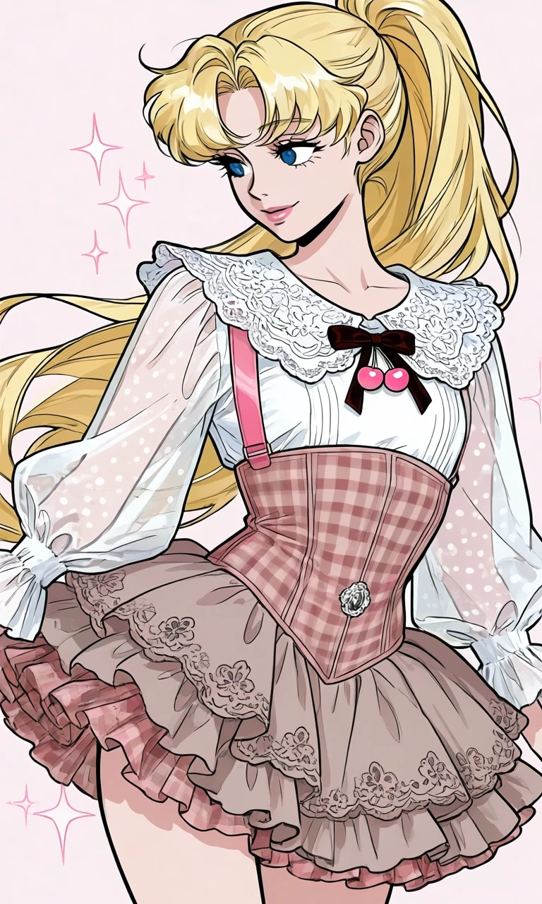
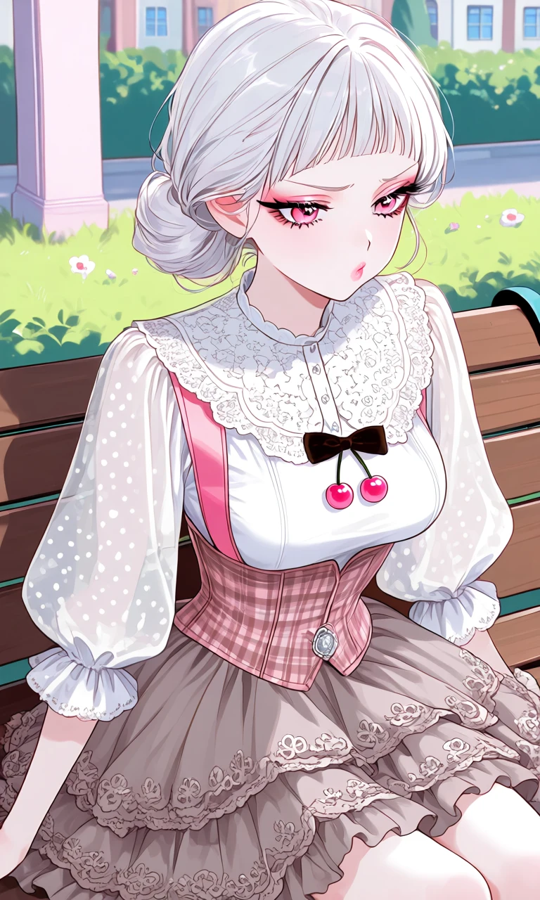

Cherry Bonbon

Outfit Prompt
A white, semi-sheer blouse with small polka dots (visible on the sleeves). Dramatic puff sleeves that are gathered at the shoulders and cinched tightly at the wrists with ruffled cuffs. The fabric is lightweight and airy. An elaborate, oversized white lace Peter Pan-style collar with intricate floral or scalloped embroidery and delicate ruffles. A small dark brown velvet ribbon bow sits at the center of the bust, with two dangling pink cherry-shaped charms hanging from it — a very sweet, coquette touch. A fitted pink-and-brown plaid corset worn over the blouse. It creates a strong hourglass silhouette with visible boning/channeling. The plaid pattern is a soft gingham muted rosy-pink, beige, and brown tones. Features a small silver-colored brooch at the lower center. A wide pink satin strap runs over the right shoulder, adding a playful suspender-like detail and contrasting with the white blouse. A tiered, ruffled mini skirt in a soft taupe tone. Made with eyelet embroidery floral motifs. Multiple layers give it volume and movement. The hem is scalloped and heavily ruffled, enhancing the romantic, doll-like aesthetic.
Outfit Examples



